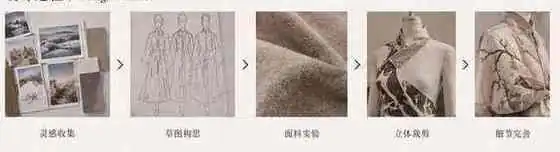

枝状放射
鹿茸轮廓提取：分叉、延展与自然不对称。
服装设计作品集
以服装为媒介，探索廓形、材质与地域文化之间的联系。作品集收录系列服装设计、图案纹样，以及从自然与材料中提取灵感的过程记录。

围绕鹿茸色彩、雾凇意象与朝鲜族传统服饰元素展开的冬季服装系列。以浅土咖色为主调，将领部结构、斜襟线条等传统服饰特征融入现代冬季外套廓形，探索东北地域气候与文化意象的当代表达。
设计关键词：鹿茸短绒肌理、雾凇、朔风、朝鲜族领型与斜襟、冬季廓形。
把灵感转化为服装时，可以将研究、廓形、结构、面料实验、纸样、样衣与成品记录串成一条清晰的设计过程。下方为适合放进作品集的参考流程，可根据每套款式的实际进度增删。

针对《茸朔·霜境》，可重点记录斜襟与领型的结构试验、短绒面料的肌理效果、拼接分割线，以及下摆收身与羽绒蓬松量之间的比例关系。
将自然物的形态简化为可重复、可组合的线条语言：鹿茸的分叉、雪花的放射结构、枯枝的疏密节奏，以及人参根茎的曲线，都可以发展成服装印花、提花、绗线或局部装饰。

提取分叉轮廓与绒毛肌理，转化为枝状线条、局部绣线和不规则重复纹样。

以树枝的伸展方向和冰晶附着层次，组织疏密变化与冷感线性纹样。

观察根须曲线、主根与细根的比例，适合转化为曲线边饰或不对称连续纹样。

以山脊起伏与雪线层叠为灵感，尝试转化成边缘分割、渐层拼接和大面积留白。
鹿茸轮廓提取：分叉、延展与自然不对称。
雪花结构提取：放射对称与层级细节。
枝条提取：疏密节奏与自然生长走势。
人参形态提取：曲线、分支与有机轮廓。
本组参考图围绕长白山—白头山雪域地貌、冬季雾凇、鹿茸短绒与人参根部形态展开。它们分别提供廓形、表面肌理、线条与色彩方向；正式作品说明中可继续补充你自己的实地照片、材料样本和观察笔记。
山体的冷灰层次、雪面留白和远近轮廓，可作为系列色彩与外套体量的环境参考。
冰层、枝干与霜晶的叠加。
短绒表面与分叉形态。
一名服装设计专业学生，关注服装廓形、面料肌理、图案语言与地域文化的当代表达。通过设计实践记录灵感收集、概念转化、材料实验与视觉呈现。
Fashion design student interested in silhouette, textile surfaces, pattern language and contemporary interpretations of regional culture. This portfolio documents selected design explorations and ongoing creative practice.
联系方式待补充 · Contact details to be added